VSCode配置c/c++环境教程(旧)
引言
尽管dev已有人维护到6.3版本，然而他的代码补全以及提示真的一言难尽，VS各项功能都挺不错，但对于刷题以及学习算法来说有些臃肿，这个时候VSCode显然具备两者的优点，小巧且功能强大，本以为配置个环境会相当简单，但昨天搞了一晚上才解决，解决后仍然觉得不难（无非是填写两个配置文件），但过程是真滴痛苦，知道配置这俩文件和配置正确是两码事。
教程
1.首先下载MinGW，然后解压到一个文件夹里，打开解压到的目录，进入bin目录
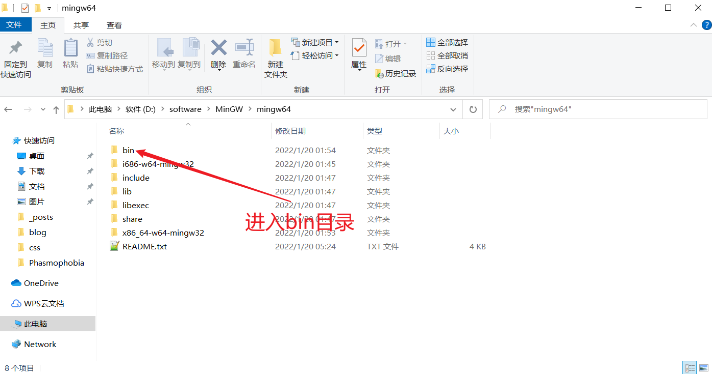
复制路径
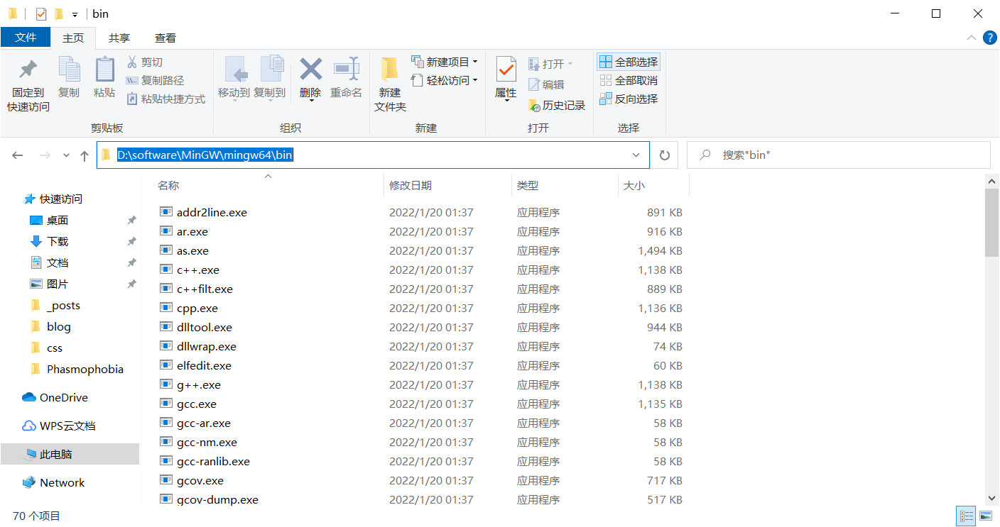
2.添加到环境变量
1.打开“编辑系统环境变量面板”
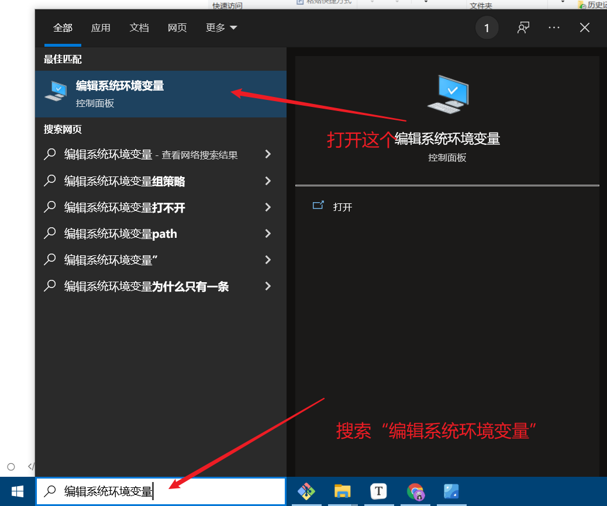
2.按图配置，然后都点确定
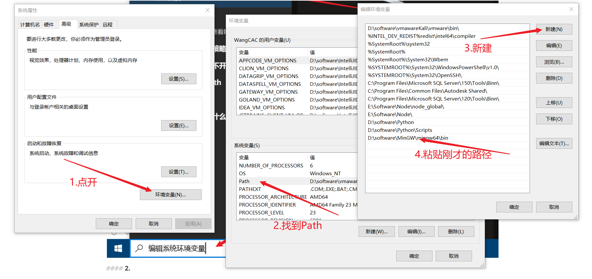
3.win+R输入cmd，回车，输入gcc，正常结果如下（说明环境配置成功）
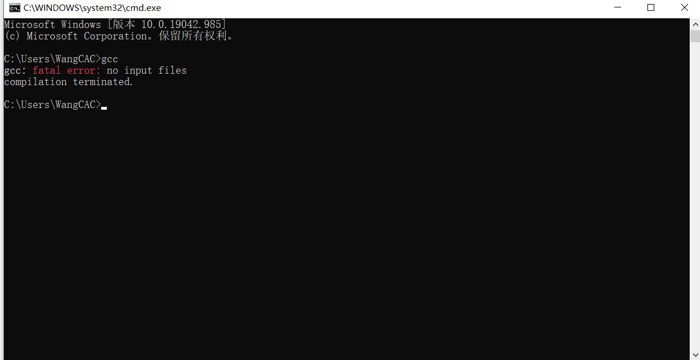
3.配置VSCode
1.进入vscode，进入一个文件夹，写一个hello.cpp
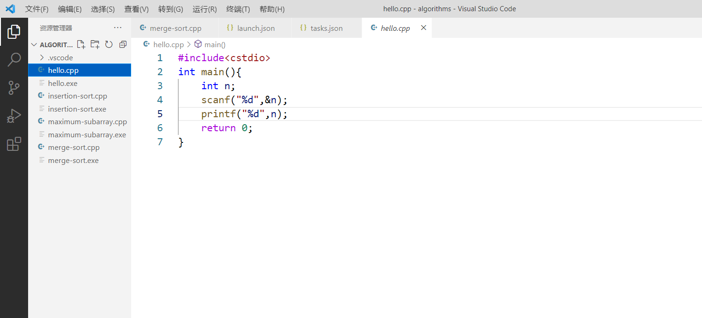
1
2
3
4
5
| #include<cstdio>
int main(){
printf("Hello World!");
return 0;
}
|
2.按F5选择gdb，接着选g++
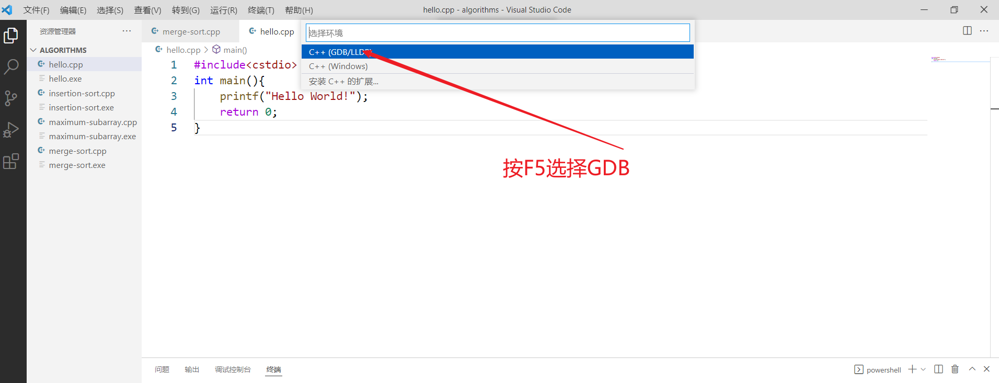
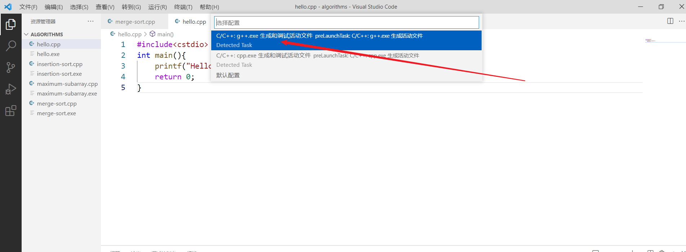
3.然后有如下提示，点击打开launch.json
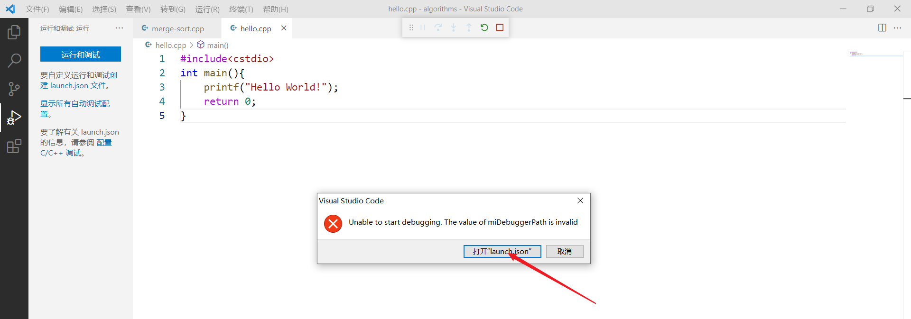
4.然后会自动生成launch.json文件，将下面代码复制粘贴，部分地方需要修改，如下：
1
2
3
4
5
6
7
8
9
10
11
12
13
14
15
16
17
18
19
20
21
22
23
24
25
26
| {
"version": "0.2.0",
"configurations": [
{
"name": "g++.exe build and debug active file",
"type": "cppdbg",
"request": "launch",
"program": "${fileDirname}\\${fileBasenameNoExtension}.exe",
"args": [],
"stopAtEntry": false,
"cwd": "${workspaceFolder}",
"environment": [],
"externalConsole": true,
"MIMode": "gdb",
"miDebuggerPath": "D:\\2Software\\mingw64\\bin\\gdb.exe",
"setupCommands": [
{
"description": "Enable pretty-printing for gdb",
"text": "-enable-pretty-printing",
"ignoreFailures": true
}
],
"preLaunchTask": "task g++"
}
]
}
|
5.改好后继续F5，会弹出如下界面，点击配置任务：
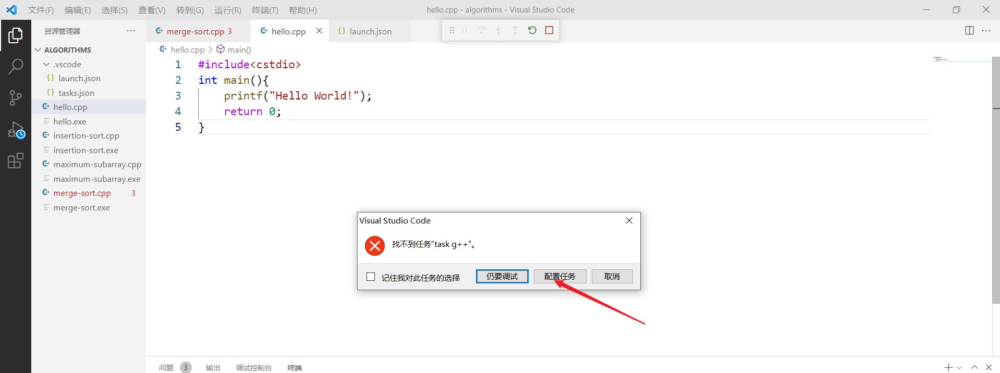
之后:
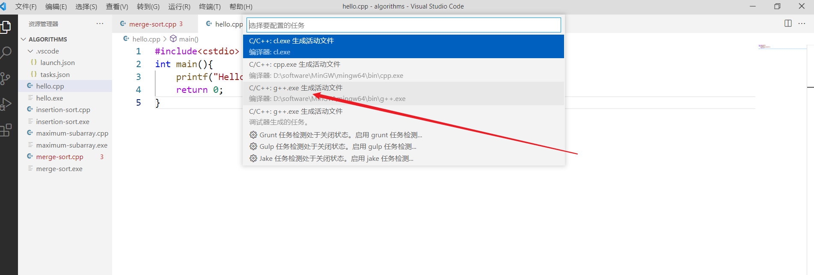
6.task.json内容如下(注：launch.json中的“preLaunchTask”和task.json中的“label”内容要一样)，配置完后再点F5即可
1
2
3
4
5
6
7
8
9
10
11
12
13
14
15
16
17
18
19
20
21
22
23
| {
"version": "2.0.0",
"tasks": [
{
"type": "shell",
"label": "task g++",
"command": "D:\\2Software\\mingw64\\bin\\g++.exe",
"args": [
"-g",
"${file}",
"-o",
"${fileDirname}\\${fileBasenameNoExtension}.exe"
],
"options": {
"cwd": "D:\\2Software\\mingw64\\bin"
},
"problemMatcher": [
"$gcc"
],
"group": "build"
}
]
}
|